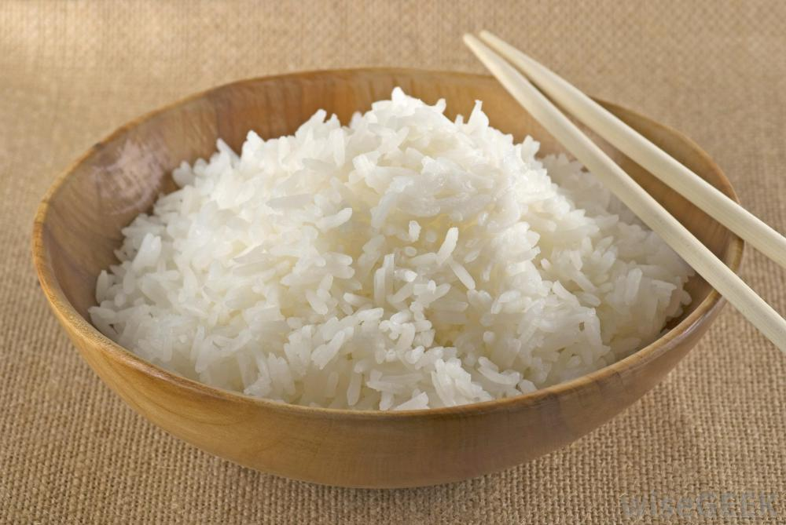
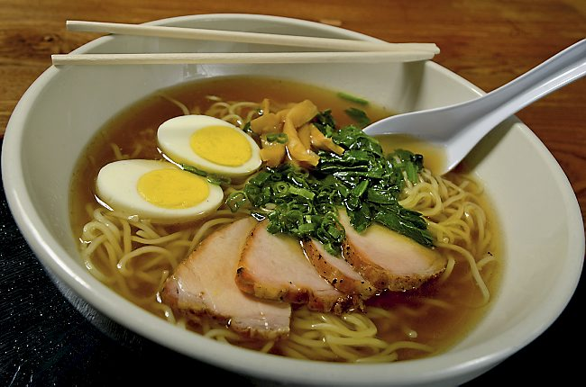
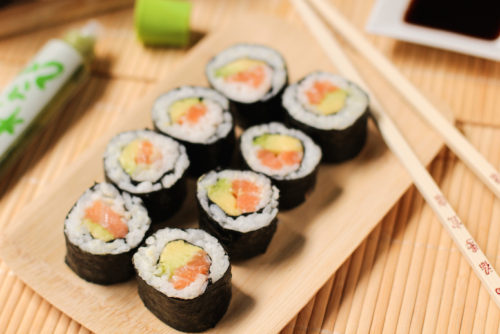
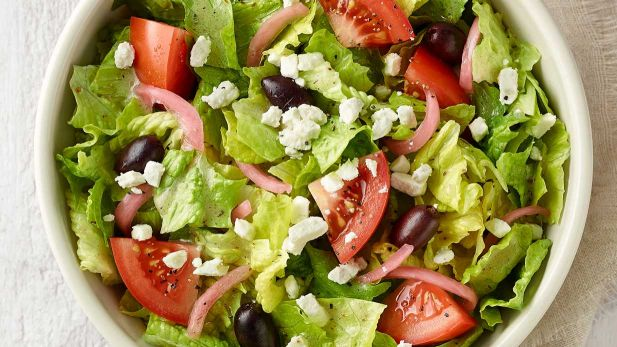
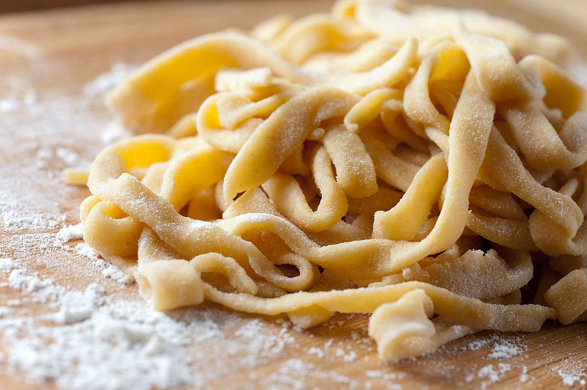
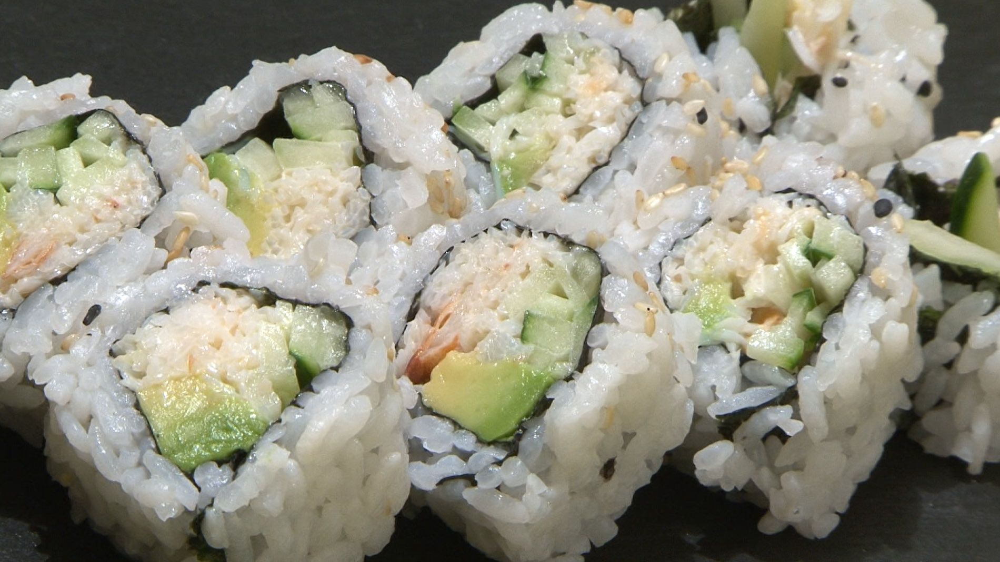

Pasta hecha en casa
31/08/2017
Haz pasta en tu casa! No tienes que comprarla en el supermercado y puedes hacerla como tu quieras. Solo necesitaras harina, huevos y agua. La preparación es simple y tu mism@ puedes hacer la salsa y condimentos que la acompañaran.
Maria1990: Muy facil de hacer!

Alejandro420: Delicioso!
Sushi invertido
26/08/2017
Este sushi se hace por el otro lado, lo cual deja la posibilidad de ponerle ajonjolí, u otras cosas. Es igual de facil de hacer que cualquier otro sushi, e igual de delicioso!

JuanCuervo318: Que buen sushi.
Catalina15: El arroz rinde bastante!
5ebas7i4n: Se puede hacer con cualquier tipo de pescado, cierto?
Mateo115: Gracias, me sirvio mucho!